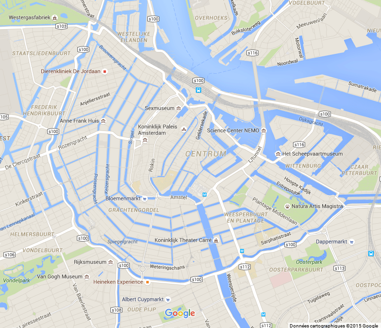
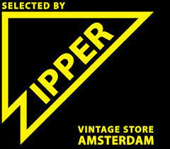
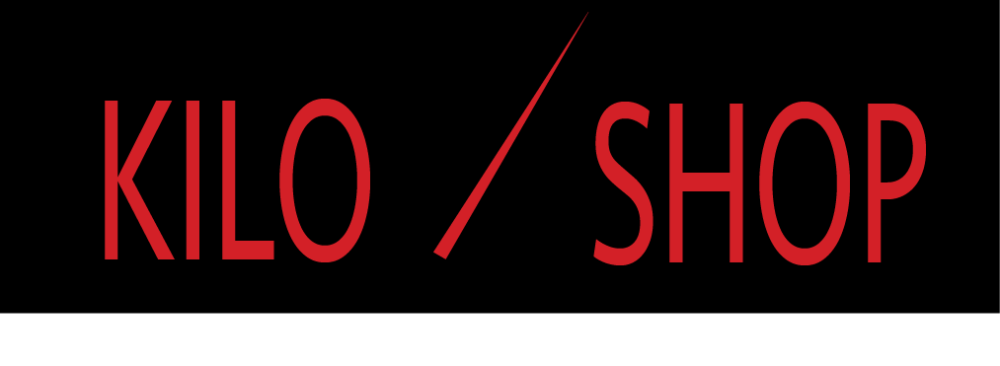

Sla je favorieten vitige kleding winkels binnen Amsterdam op. Hier onder zie je een kaart van Amsterdam met erin waar je al je favoriete winkels kunt vinden.
 
Druk op welke winkel je dan ook wilt opslaan en het staat automatisch op. Hierdoor ontvang je het nieuws van je opgeslagen winkels direct.